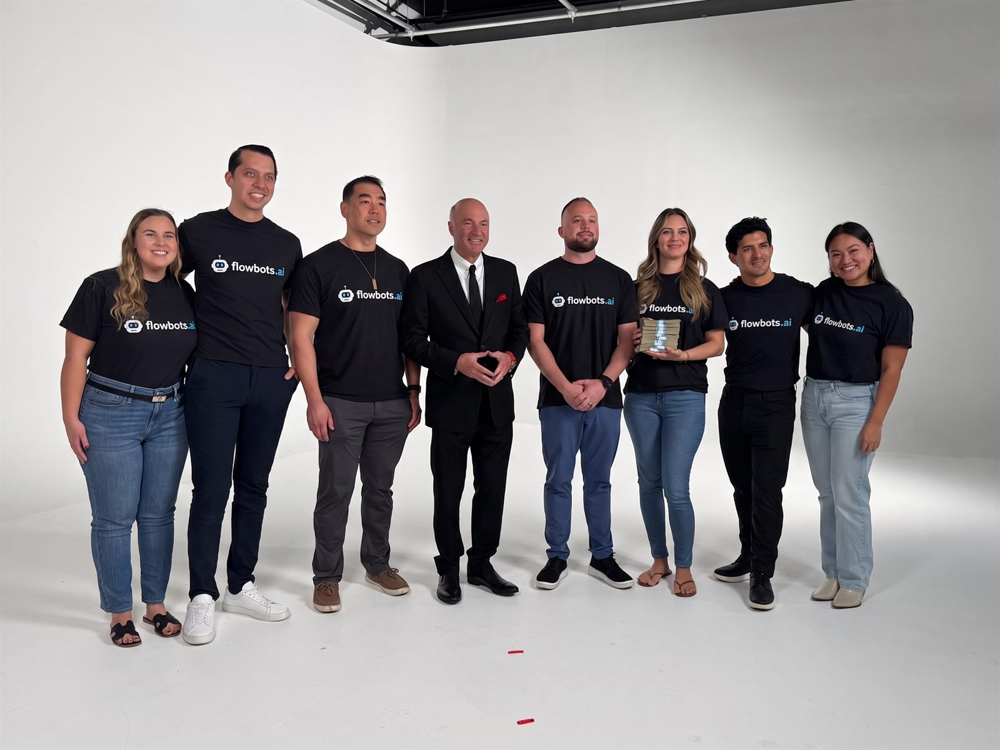

Custom AI automation · 25+ industries
We automate the work your team shouldn’t be doing.
If your team does it on a keyboard or a phone, we build the AI that handles it. Calls answered, leads followed up, invoices processed, CRM updated, around the clock.
HIPAA compliantSOC 2 certifiedFixed-price proposalsLive in 4–8 weeks
| Time | Handled | System | Staff time |
|---|---|---|---|
| 21:41 | After-hours call answered, job bookedCaller’s air conditioning failed. Wednesday 2:00 PM offered, accepted, technician assigned. | Voice AI | 0 min |
| 21:42 | Confirmation sent, dispatch notifiedText to the caller, email to dispatch, both inside a minute of the call ending. | SMS AI | 0 min |
| 23:07 | New enquiry answered in 30 secondsWeb form submitted at 23:06. Qualified and routed before the lead reached a competitor. | Workflow | 0 min |
| 02:15 | Twelve invoices processedRead, matched and posted. Nobody opened a spreadsheet. | Operations | 0 min |
| 06:30 | Review requests sent for yesterday’s jobsOne message per completed job, sent while the work is still fresh. | Growth | 0 min |
| 06:55 | Crew routes planned for the daySequenced by location and skill, ready before the first van moves. | Operations | 0 min |
Connects to what you already run. More than 30 platforms. If your system has an API, we can connect to it.
01What we build
Custom AI automation for every part of your business.
We build AI systems around your exact workflows, connected to the tools you already use. No templates, and nothing for you to configure yourself.
AI Communication
Voice, text and email AI that handles every customer interaction around the clock.
- Inbound and outbound voice AI
- After-hours call coverage
- Text and email follow-ups
- Appointment reminders
AI Operations
Automate the back-office work that quietly drains your team’s time.
- Data entry and document processing
- Invoice and payment processing
- Scheduling and calendar management
- CRM and system integration
AI Growth
Turn more leads into customers, and more customers into repeat buyers.
- Review and reputation management
- Sales pipeline automation
- Win-back and reactivation campaigns
- Lead nurturing in perpetuity
AI for Teams
Scale your team’s capacity without adding headcount.
- Customer service automation
- Onboarding and people operations
- Dispatch and route optimisation
- Reporting and compliance
02Proof of work
Working with Kevin O’Leary to automate one of his companies.
The same team, the same method, the same fixed-price process we bring to every FlowBots build. We study the workflow first, then build the AI that runs it.
Two founders with 35+ years combined across AI, marketing and technology. The technical work is not outsourced.

03Built for your industry
Automations that actually fit your business.
Six industries, one method. We study what your day actually looks like, then automate the parts a machine should be doing.

Home Services
Missed-call text-back, instant lead follow-up, route optimisation and dispatch.

Healthcare & Dental
AI receptionist, reminder sequences, patient intake and insurance verification.
Real Estate
Speed-to-lead response, lead qualification, showing scheduler and long-term nurture.
Legal
Round-the-clock client intake, consultation scheduling and document collection.

Automotive
Service booking, status updates, follow-up and reactivation campaigns.
Restaurants
Reservation handling, order follow-up, review generation and win-back offers.
04The speed difference
What used to take hours now takes seconds.
The jobs your team still does by hand, and what each one takes once it is automated.
| Task | By hand | With FlowBots |
|---|---|---|
| Lead response | 4 hours | 30 seconds |
| Technician routing | Hours of planning | One click |
| Invoice processing | 20 min each | Instant |
| Monthly reporting | 8 hours | Real-time |
| Employee onboarding | 5 days | 2 hours |
Source: performance metrics from FlowBots automation deployments.
05The investment
The math that makes this easy.
Projects start at a fixed price, quoted in full before any work begins.
A full-time receptionist
$3,500+ a month. Works nine to five, takes vacations, handles one call at a time, and misses after-hours leads.
A missed lead
$500 to $50,000. Every unanswered call, every slow follow-up, every lead that went to a competitor instead.
FlowBots AI
From $15,000, fixed price. Unlimited simultaneous calls, never a day off, and it gets sharper over time.
Projects start at $15,000, and most clients see measurable return within 90 days. You get a fixed-price proposal before any work begins, so you know exactly what you are investing before you sign anything.
06An important distinction
This is not a $99-a-month chatbot.
What $99 a month gets you
- A generic chatbot you configure yourself
- Drag-and-drop templates that do not fit your workflow
- You do all the integration work
- Ticket-based support when it breaks
- Their platform, their rules, their limits
What a custom build gets you
- An AI system designed for your exact workflows
- We study your business before writing a line of code
- We handle every integration, end to end
- A dedicated team that monitors and optimises
- Your data stays yours, with no lock-in
Template platforms give you tools. We give you a finished, working system that runs your operations from day one. It is the difference between buying a hammer and hiring a contractor to build the house.
07How it runs
Three steps to automation.
We study your workflows first, build to them, then launch and keep optimising. Most projects go live in four to eight weeks.
Listen
We study your exact workflows, tools and business rules. No templates, and no assumptions.
Build
We design and build a custom AI system for your specific tasks: calls, texts, emails, CRM updates, dispatching, compliance, whatever you need.
Launch
Your AI goes live. We monitor, optimise and support it. You get back to running your business.
08Who we are
Built by people who have done this before.
Two founders who build the systems themselves rather than outsourcing the technical work.

Brian Hong
Co-founder & CEO
Over two decades in marketing and business strategy. Brian understands the operational pain business owners face because he has lived it, and he leads client strategy so every automation solves a real business problem.

Hanson Cheng
Co-founder & CTO
Ten-plus years building enterprise automation and AI systems. Hanson designs the architecture behind every FlowBots project, from voice AI to complex multi-system integrations, and does not outsource the technical work.
We started FlowBots because we saw businesses spending thousands on tools that did not talk to each other, and teams buried in work machines should handle. We build the systems that fix that.
09How we protect your investment
Fixed price. Your data. No lock-in.
Fixed-price proposals
You know exactly what you are paying before any work begins. No surprise invoices, and no scope-creep charges.
Your data stays yours
The code, the automations and the integrations are all yours. We do not hold your business on our platform.
No long-term contracts
Stay because the results speak for themselves. Support is month-to-month after launch.
We automate the repetitive work done on keyboards and phones. We do not replace human judgement, creativity, relationships, or the expertise that makes your business worth calling.
10Common questions
Everything you need to know.
Straight answers, no fluff.
ServicesWhat exactly does FlowBots build for my business?
Custom AI systems designed around your specific workflows. If a person in your company does it on a keyboard or a phone, we can probably automate it. Common builds are AI voice agents, text follow-up systems, CRM automation, compliance workflows, dispatching, payroll processing and multi-channel communication.
PricingHow much does a custom AI automation project cost?
Projects range from $15,000 to $300,000 depending on scope, and pilot projects start at $15,000. AI voice usage is billed at $0.25 per minute of actual call time. You get a fixed-price quote before any work begins.
TimelineHow long does it take to build and launch?
Most projects take four to eight weeks. Complex enterprise builds take eight to sixteen weeks. You get a clear timeline during your discovery call.
IntegrationsWhat systems can the automation integrate with?
More than 30 platforms, including ServiceTitan, Salesforce, HubSpot, GoHighLevel, Dentrix, Mindbody, Boulevard and Clio. If your system has an API, we can connect to it, and custom integrations are included in project scope.
SecurityIs this HIPAA compliant for healthcare and dental practices?
Yes. We maintain Business Associate Agreements with all AI providers, enforce HIPAA protocols, and hold SOC 2 Type II certification with annual independent security audits.
GeneralWill this replace my employees?
No. We automate the busywork done on keyboards and phones. Human judgement, creativity, relationship-building and the expertise that makes your business unique stay with your team, who tend to get better at their jobs once a machine takes the repetitive work.
11Latest insights
AI automation news and guides.
Industry research, workforce transformation insights and practical automation guides from the FlowBots team.
AI for Tour Operators
Automating booking confirmations, pre-tour preparation, post-tour review collection and lead nurture for group enquiries.
Read MoreAI for Fishing Charters
Automating trip booking, weather-related communication, post-trip review requests and rebooking campaigns.
Read MoreAI for Specialty Retail
Automating customer follow-up, loyalty programme management, personalised recommendations and review generation.
Read More12Next step
Stop losing leads while you sleep.
Thirty minutes, free, no pressure and no sales pitch. Tell us what your team still does by hand and we will come back with the two or three automations worth building first.